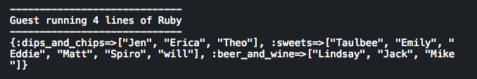

Enumerable Methods
Enumerable#group_by
2/3/2016
Group_by is a powerful enumberable Ruby method. It allows us to break up a collection like a hash or an array based on criteria that we set up. Let's take a real world example to see how this enumerable method might be able to help us out!
This weekend is the Super Bowl and I'm having a party. Last year, my party was a bit of a mess. It was a potluck style party but we all ended up making similar dishes. As a result, between 12 guests, I had four taco dips, five cases of Bud Light and a buffalo chicken dip. As much as I love dips and beer, I was hoping this year, we would have more variety when it came to snacks. Unfortunately, my friends are not very decisive and when I asked what they would be bringing, I got a lot of "I'll figure it out" or "Whatever you want." This year, I'm going to assign everyone a category and I'm going to do it in Ruby using group_by!
In the example below, I'm starting out with an array of my friends. After last year, I don't want to leave anything to chance. Sure I could easily break up this large array into smaller arrays but after last year, I feel like I really need to give my friends more guidence on what to make. So I'm thinking I'll want to break my friends up into smaller groups but I'll want to break them up into keys. I don't want anyone to think I'm playing favorites so I'm also going to use a random number operator in my code as well. This way, I will randomly assign my friends to categories. Here's the input:
Below, you'll see the output. The program is taking the array and breaking it down into hash keys as our food categories and then using a random number generator to assign my friends to those categories.
Now I've solved my problem! I've been able to use the group_by enumberable Ruby method to take an array of my friends and then break them into random groups assigned to hash keys!